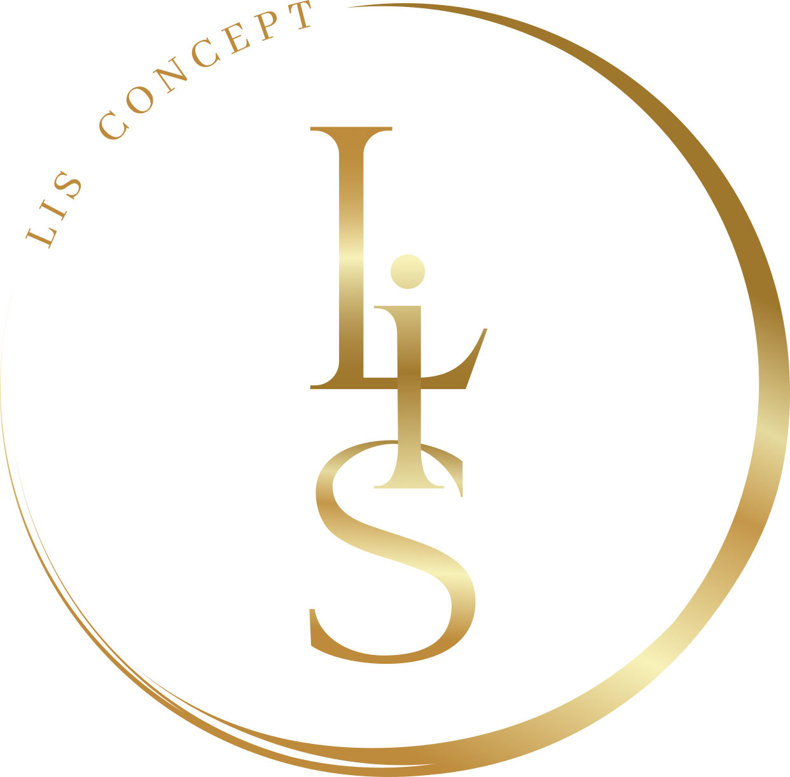
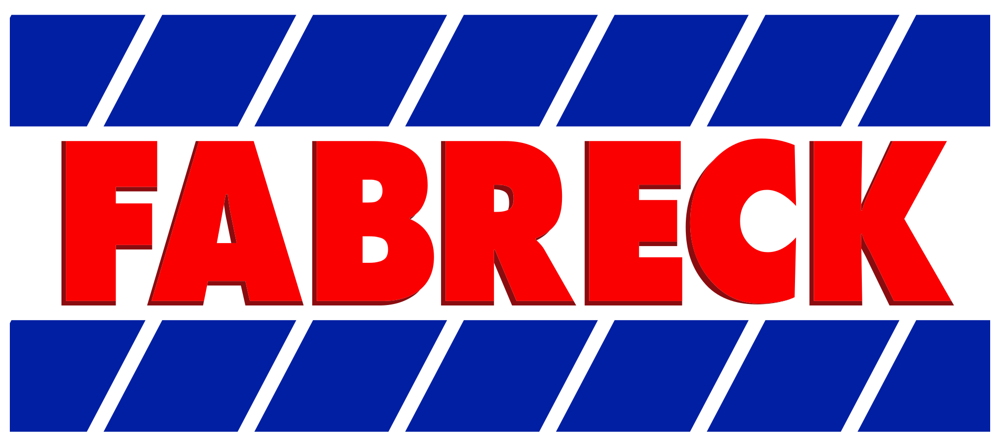
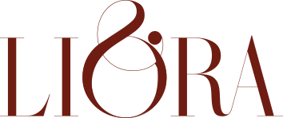

Conteúdo • Audiovisual
Projetos
O trabalho fala melhor quando dá para ver o raciocínio.
Uma seleção de projetos em que estratégia, design, conteúdo, audiovisual, mídia e web se encontraram de formas diferentes.
Projetos
Uma seleção de projetos em que estratégia, design, conteúdo, audiovisual, mídia e web se encontraram de formas diferentes.

Ver case ↗
Ver case ↗

Ver projeto ↗